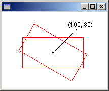
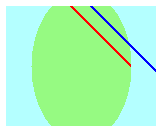
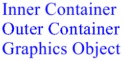

Windows GDI+ provides containers that you can use to temporarily replace or augment part of the state in a Graphics object. You create a container by calling the Graphics::BeginContainer method of a Graphics object. You can call Graphics::BeginContainer repeatedly to form nested containers.
The following example creates a Graphics object and a container within that Graphics object. The world transformation of the Graphics object is a translation 100 units in the x direction and 80 units in the y direction. The world transformation of the container is a 30-degree rotation. The code makes the call
DrawRectangle(&pen, -60, -30, 120, 60)
twice. The first call to Graphics::DrawRectangle is inside the container; that is, the call is in between the calls to Graphics::BeginContainer and Graphics::EndContainer. The second call to Graphics::DrawRectangle is after the call to Graphics::EndContainer.
Graphics graphics(hdc);
Pen pen(Color(255, 255, 0, 0));
GraphicsContainer graphicsContainer;
graphics.TranslateTransform(100.0f, 80.0f);
graphicsContainer = graphics.BeginContainer();
graphics.RotateTransform(30.0f);
graphics.DrawRectangle(&pen, -60, -30, 120, 60);
graphics.EndContainer(graphicsContainer);
graphics.DrawRectangle(&pen, -60, -30, 120, 60);
In the preceding code, the rectangle drawn from inside the container is transformed first by the world transformation of the container (rotation) and then by the world transformation of the Graphics object (translation). The rectangle drawn from outside the container is transformed only by the world transformation of the Graphics object (translation). The following illustration shows the two rectangles.

Â
The following example illustrates how nested containers handle clipping regions. The code creates a Graphics object and a container within that Graphics object. The clipping region of the Graphics object is a rectangle, and the clipping region of the container is an ellipse. The code makes two calls to the Graphics::DrawLine method. The first call to Graphics::DrawLine is inside the container, and the second call to Graphics::DrawLine is outside the container (after the call to Graphics::EndContainer). The first line is clipped by the intersection of the two clipping regions. The second line is clipped only by the rectangular clipping region of the Graphics object.
Graphics graphics(hdc);
GraphicsContainer graphicsContainer;
Pen redPen(Color(255, 255, 0, 0), 2);
Pen bluePen(Color(255, 0, 0, 255), 2);
SolidBrush aquaBrush(Color(255, 180, 255, 255));
SolidBrush greenBrush(Color(255, 150, 250, 130));
graphics.SetClip(Rect(50, 65, 150, 120));
graphics.FillRectangle(&aquaBrush, 50, 65, 150, 120);
graphicsContainer = graphics.BeginContainer();
// Create a path that consists of a single ellipse.
GraphicsPath path;
path.AddEllipse(75, 50, 100, 150);
// Construct a region based on the path.
Region region(&path);
graphics.FillRegion(&greenBrush, ®ion);
graphics.SetClip(®ion);
graphics.DrawLine(&redPen, 50, 0, 350, 300);
graphics.EndContainer(graphicsContainer);
graphics.DrawLine(&bluePen, 70, 0, 370, 300);
The following illustration shows the two clipped lines.

As the two preceding examples show, transformations and clipping regions are cumulative in nested containers. If you set the world transformations of the container and the Graphics object, both transformations will apply to items drawn from inside the container. The transformation of the container will be applied first, and the transformation of the Graphics object will be applied second. If you set the clipping regions of the container and the Graphics object, items drawn from inside the container will be clipped by the intersection of the two clipping regions.
Quality settings ( SmoothingMode, TextRenderingHint, and the like) in nested containers are not cumulative; rather, the quality settings of the container temporarily replace the quality settings of a Graphics object. When you create a new container, the quality settings for that container are set to default values. For example, suppose you have a Graphics object with a smoothing mode of SmoothingModeAntiAlias. When you create a container, the smoothing mode inside the container is the default smoothing mode. You are free to set the smoothing mode of the container, and any items drawn from inside the container will be drawn according to the mode you set. Items drawn after the call to Graphics::EndContainer will be drawn according to the smoothing mode (SmoothingModeAntiAlias) that was in place before the call to Graphics::BeginContainer.
You are not limited to one container in a Graphics object. You can create a sequence of containers, each nested in the preceding, and you can specify the world transformation, clipping region, and quality settings of each of those nested containers. If you call a drawing method from inside the innermost container, the transformations will be applied in order, starting with the innermost container and ending with the outermost container. Items drawn from inside the innermost container will be clipped by the intersection of all the clipping regions.
The following example creates a Graphics object and sets its text rendering hint to TextRenderingHintAntiAlias. The code creates two containers, one nested within the other. The text rendering hint of the outer container is set to TextRenderingHintSingleBitPerPixel, and the text rendering hint of the inner container is set to TextRenderingHintAntiAlias. The code draws three strings: one from the inner container, one from the outer container, and one from the Graphics object itself.
Graphics graphics(hdc);
GraphicsContainer innerContainer;
GraphicsContainer outerContainer;
SolidBrush brush(Color(255, 0, 0, 255));
FontFamily fontFamily(L"Times New Roman");
Font font(&fontFamily, 36, FontStyleRegular, UnitPixel);
graphics.SetTextRenderingHint(TextRenderingHintAntiAlias);
outerContainer = graphics.BeginContainer();
graphics.SetTextRenderingHint(TextRenderingHintSingleBitPerPixel);
innerContainer = graphics.BeginContainer();
graphics.SetTextRenderingHint(TextRenderingHintAntiAlias);
graphics.DrawString(L"Inner Container", 15, &font,
PointF(20, 10), &brush);
graphics.EndContainer(innerContainer);
graphics.DrawString(L"Outer Container", 15, &font, PointF(20, 50), &brush);
graphics.EndContainer(outerContainer);
graphics.DrawString(L"Graphics Object", 15, &font, PointF(20, 90), &brush);
The following illustration shows the three strings. The strings drawn from the inner container and the Graphics object are smoothed by antialiasing. The string drawn from the outer container is not smoothed by antialiasing because of the TextRenderingHintSingleBitPerPixel setting.

Â
Â